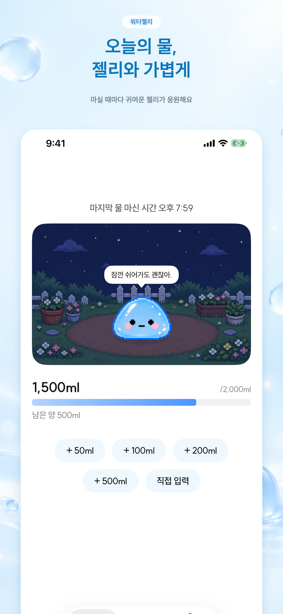
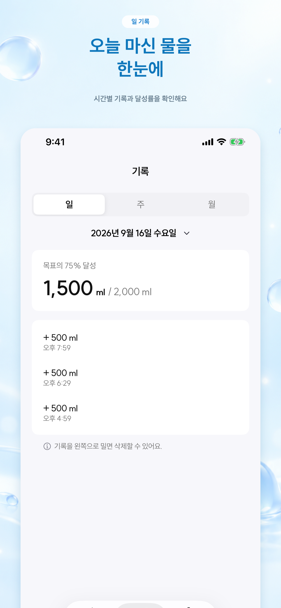
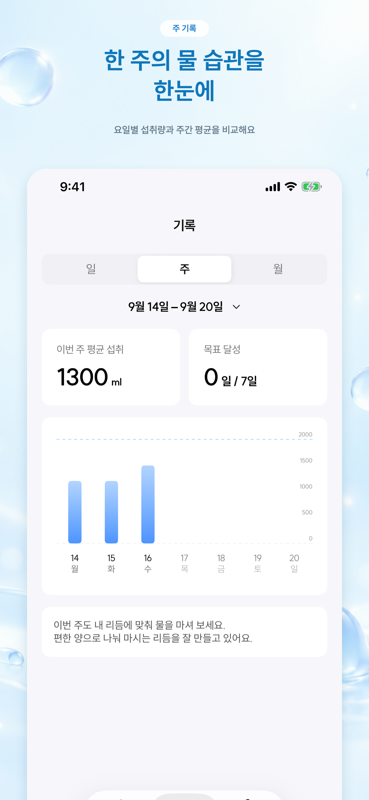
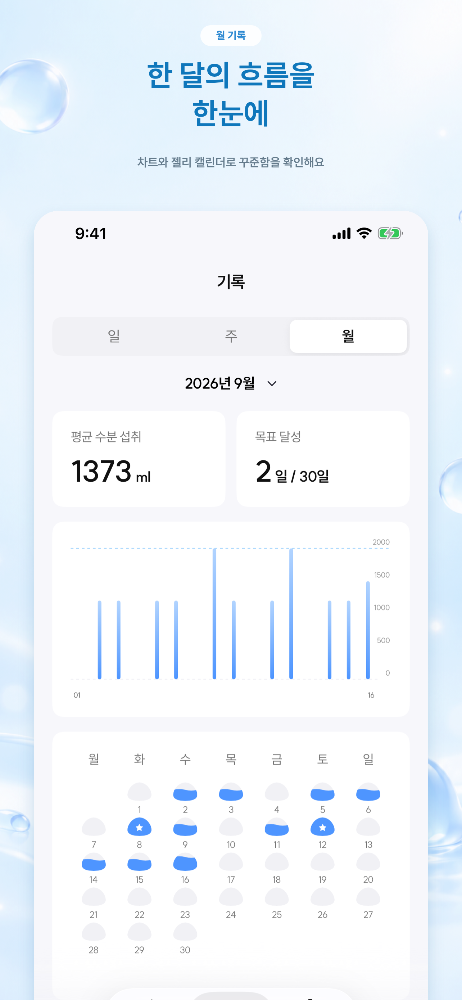
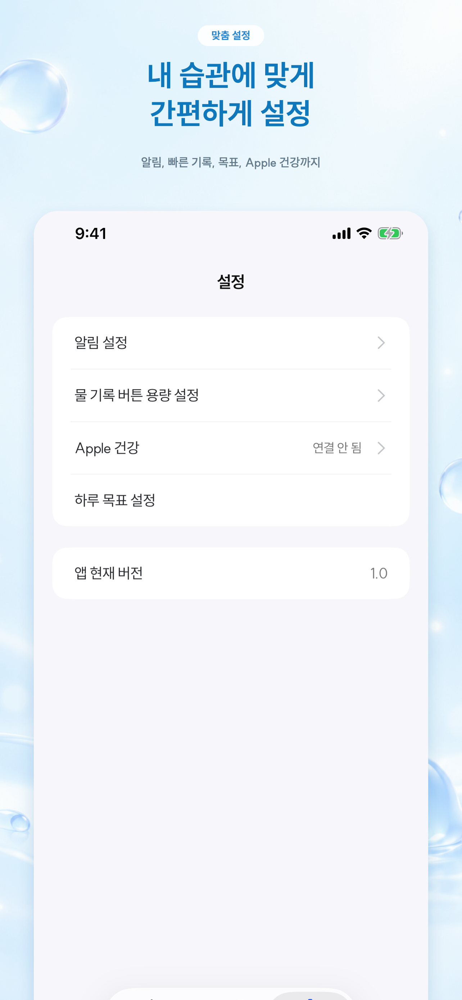

바로 더하는 빠른 기록
50ml, 100ml, 200ml, 500ml 버튼으로 기록하고, 원하는 양은 직접 입력할 수 있어요.
매일의 수분 습관
마신 물을 한 번의 탭으로 기록하고, 작은 젤리의 응원과 함께 나에게 맞는 편안한 물 마시기 리듬을 만들어 보세요.

Simple by design
복잡한 입력 없이 바로 기록하고, 필요한 순간에만 살펴볼 수 있도록 만들었습니다.
50ml, 100ml, 200ml, 500ml 버튼으로 기록하고, 원하는 양은 직접 입력할 수 있어요.
오늘의 기록부터 주간 평균, 월간 흐름과 목표 달성일까지 차분하게 돌아볼 수 있어요.
요일과 시간대별 알림, 홈 화면 위젯, Apple 건강 연결로 기록을 자연스럽게 이어가요.
A little encouragement
숫자만 쌓이는 기록 대신, 마신 순간마다 젤리가 작은 표정과 말로 응원합니다. 부담을 주지 않고 다시 물 한 잔을 떠올리게 하는 친구예요.
Inside the app




Water Jelly
워터젤리는 곧 App Store에서 만날 수 있습니다.